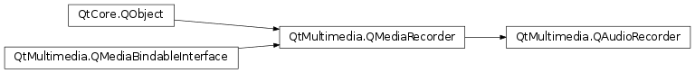

QAudioRecorder¶
Synopsis¶
Functions¶
- def
audioInput() - def
audioInputDescription(name) - def
audioInputs() - def
defaultAudioInput()
Slots¶
- def
setAudioInput(name)
Signals¶
- def
audioInputChanged(name) - def
availableAudioInputsChanged()
Detailed Description¶
The
PySide2.QtMultimedia.QAudioRecorderclass is used for the recording of audio.The
PySide2.QtMultimedia.QAudioRecorderclass is a high level media recording class and contains the same functionality asPySide2.QtMultimedia.QMediaRecorder.audioRecorder = new QAudioRecorder; QAudioEncoderSettings audioSettings; audioSettings.setCodec("audio/amr"); audioSettings.setQuality(QMultimedia::HighQuality); audioRecorder->setEncodingSettings(audioSettings); audioRecorder->setOutputLocation(QUrl::fromLocalFile("test.amr")); audioRecorder->record();In addition
PySide2.QtMultimedia.QAudioRecorderprovides functionality for selecting the audio input.QStringList inputs = audioRecorder->audioInputs(); QString selectedInput = audioRecorder->defaultAudioInput(); foreach (QString input, inputs) { QString description = audioRecorder->audioInputDescription(input); // show descriptions to user and allow selection selectedInput = input; } audioRecorder->setAudioInput(selectedInput);The Audio Recorder Example shows how to use this class in more detail.
-
class
PySide2.QtMultimedia.QAudioRecorder([parent=nullptr])¶ Parameters: parent – PySide2.QtCore.QObjectConstructs an audio recorder. The
parentis passed toPySide2.QtMultimedia.QMediaObject.
-
PySide2.QtMultimedia.QAudioRecorder.audioInput()¶ Return type: unicode Returns the active audio input name.
-
PySide2.QtMultimedia.QAudioRecorder.audioInputChanged(name)¶ Parameters: name – unicode
-
PySide2.QtMultimedia.QAudioRecorder.audioInputDescription(name)¶ Parameters: name – unicode Return type: unicode Returns the readable translated description of the audio input device with
name.
-
PySide2.QtMultimedia.QAudioRecorder.audioInputs()¶ Return type: list of strings Returns a list of available audio inputs
-
PySide2.QtMultimedia.QAudioRecorder.availableAudioInputsChanged()¶
-
PySide2.QtMultimedia.QAudioRecorder.defaultAudioInput()¶ Return type: unicode Returns the default audio input name.
-
PySide2.QtMultimedia.QAudioRecorder.setAudioInput(name)¶ Parameters: name – unicode Set the active audio input to
name.
© 2018 The Qt Company Ltd. Documentation contributions included herein are the copyrights of their respective owners. The documentation provided herein is licensed under the terms of the GNU Free Documentation License version 1.3 as published by the Free Software Foundation. Qt and respective logos are trademarks of The Qt Company Ltd. in Finland and/or other countries worldwide. All other trademarks are property of their respective owners.